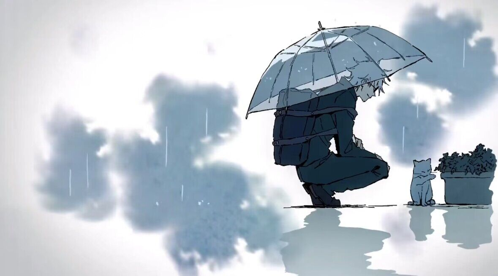
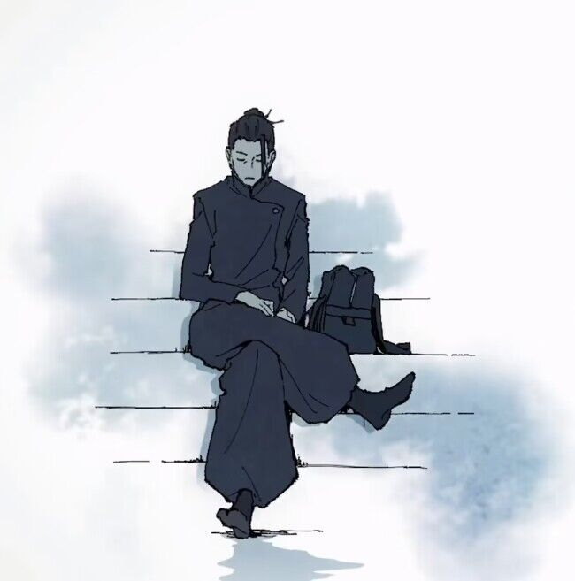
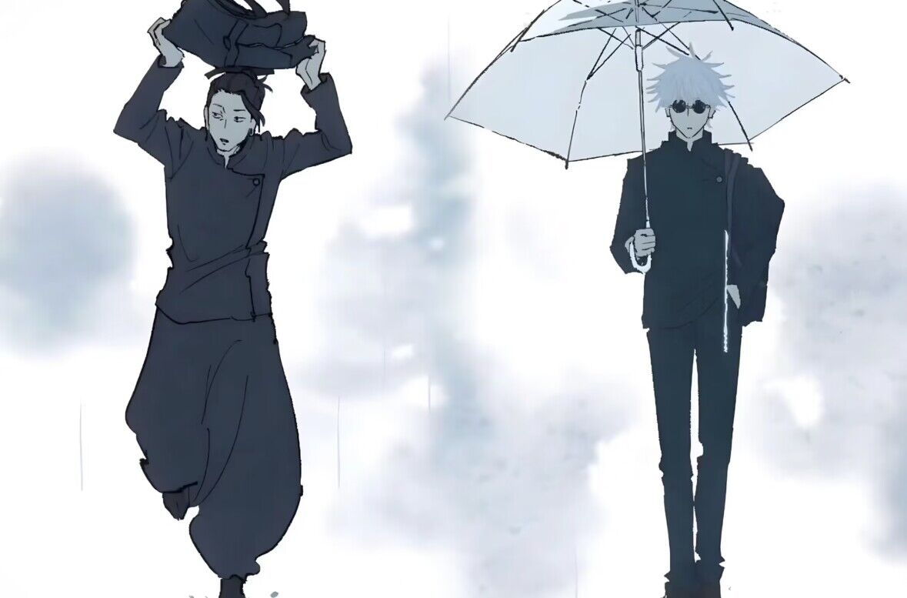

第一期
少年战斗着——“为寻求正确的死亡”。
辛酸、后悔、耻辱，人类产生的负面情感，化为诅咒，潜入日常生活。
诅咒是蔓延于世界的祸源，最糟糕的情况下，会让人类踏入死亡，并且诅咒只能以诅咒祓除。
虎杖悠仁是一位体育万能的高中生（甚至可以做到随便破世界纪录），某天捡到了一个被布条所包裹的手指，并将其交予其研究灵异事件的社团中的学姐，学姐解开封印，意外导致其他咒灵吸引过来，攻击学姐与另外一名社团成员。
他为了从“咒物”危机中解救学姐，而吞下了被诅咒的手指“两面宿傩之指”（诅咒之王两面宿傩所留下的特级咒物)，让“宿傩”这种诅咒跟自己合二为一。
咒术师高层企图直接杀死虎杖悠仁，在最强咒术师五条悟劝解下，让其吃下20根“两面宿傩之指”后死亡。在五条悟的指引下，进入对诅咒专门机关“东京都立咒术高等专门学校”，并遇到了伏黑惠与钉崎野蔷薇这两位同学。
为了实现爷爷要他“助人”的遗言，虎杖将会与“诅咒”战斗下去。
经典瞬间
第二期
怀玉·玉折
这是最强的两人一去不复返的青春。时光回溯至2006年春天。高专时代的五条悟与夏油杰，身为咒术师表现活跃的并所向无敌的两人，接到了拥有不死术式的咒术界关键“天元”的委托。
委托有两点：担任天元的适合者“星浆体」天内理子的“护卫”以及“抹消”。两人前往执行护卫任务，却有一名自称伏黑的“术师杀手”介入，企图暗杀“星浆体”……终将分道扬镳，成为最强咒术师与最凶恶咒诅师的五条与夏油，他们的过去即将揭晓。
经典瞬间
